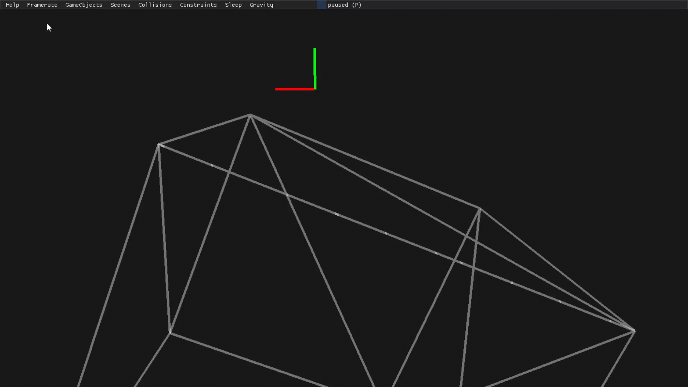
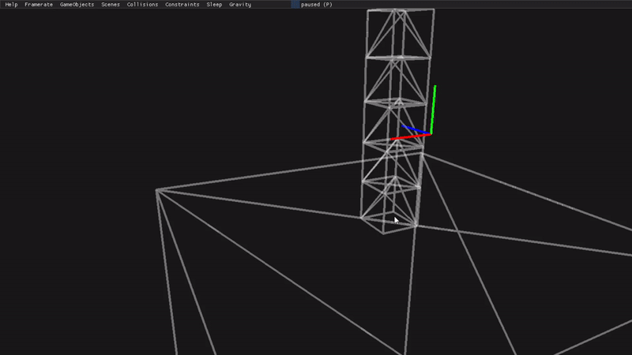
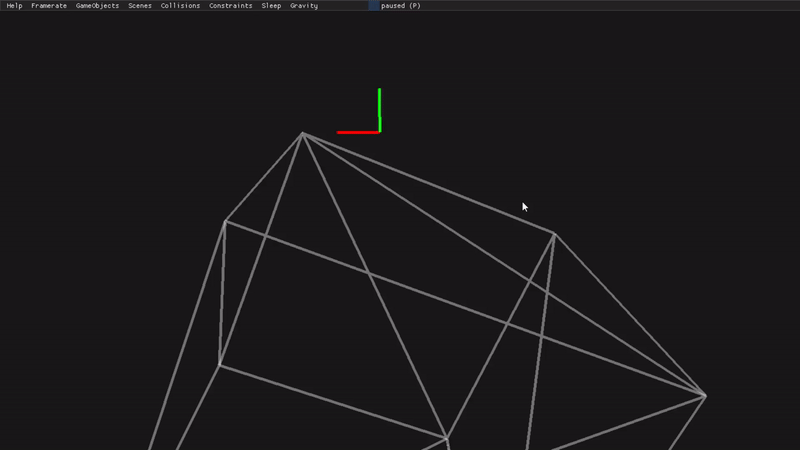
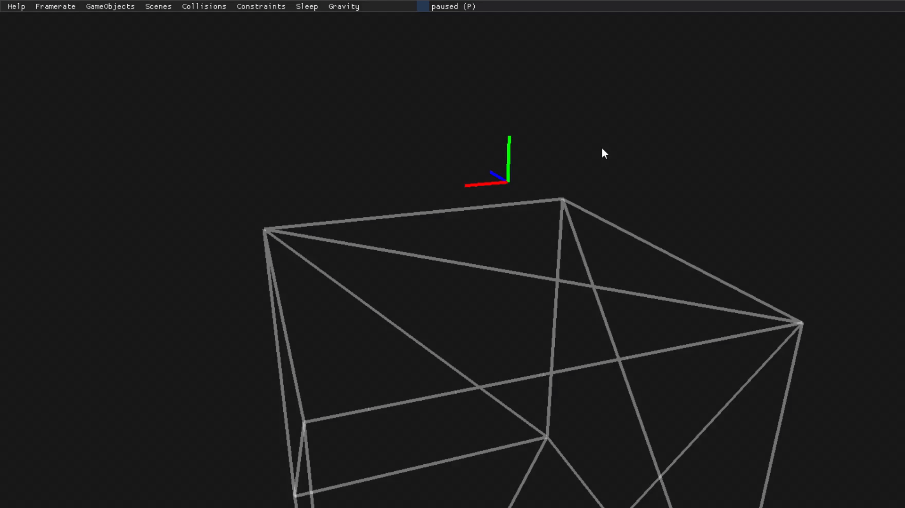
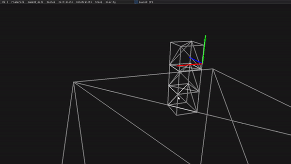
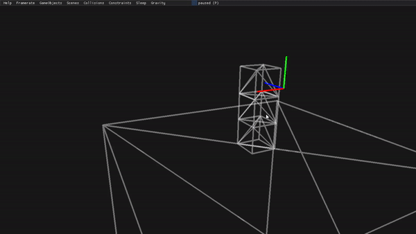
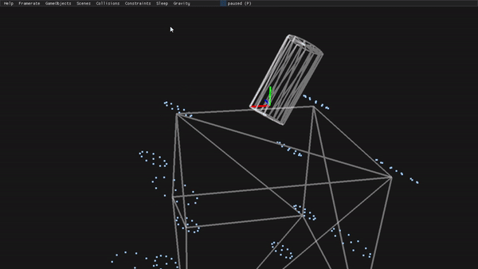
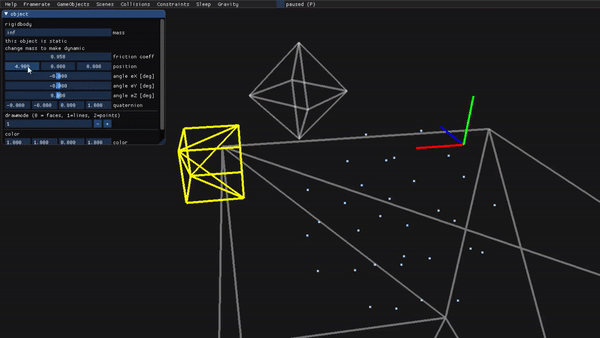

3D physics engine I developed during the course CS550 - Physics Simulation that I attended at Digipen - Bilbao during the Spring 2020 semester.
It features rigid body dynamics working for any convex shape. The integration uses the semi-implicit Euler method. The inertia tensor is computed from the geometry assuming the mass is evenly distributed throughout the volume. The collision detection can be done with both SAT and JGK. Both use half-edge meshes in order to optimize using hill-climbing. SAT also has contact generation. The collision resolution uses an iterative contact constraints solver.
You can read the details of my implementation here.
Written on my own entirelly in c++ with OpenGL and using the following libraries: GLFW, Dear ImGui, Glad, GLM, GoogleTest, KHR.
The rendering has been kept to a bare minimum as it isn't the focus of this project.
3 boxes falling on ramps with different friction coeficients:

stack of 5 boxes being perturbed from the bottom:

2 stacks of 2 boxes with different friction coefficients sliding down a slope:

falling cylinder:

stack of 3 boxes being perturbed from the bottom:

stack of 3 boxes being perturbed from the middle:
stack of 3 boxes being perturbed from the top:

Minkowsky difference of a cylinder and a cube:

Minkowsky difference of a cube and an octahedron:
